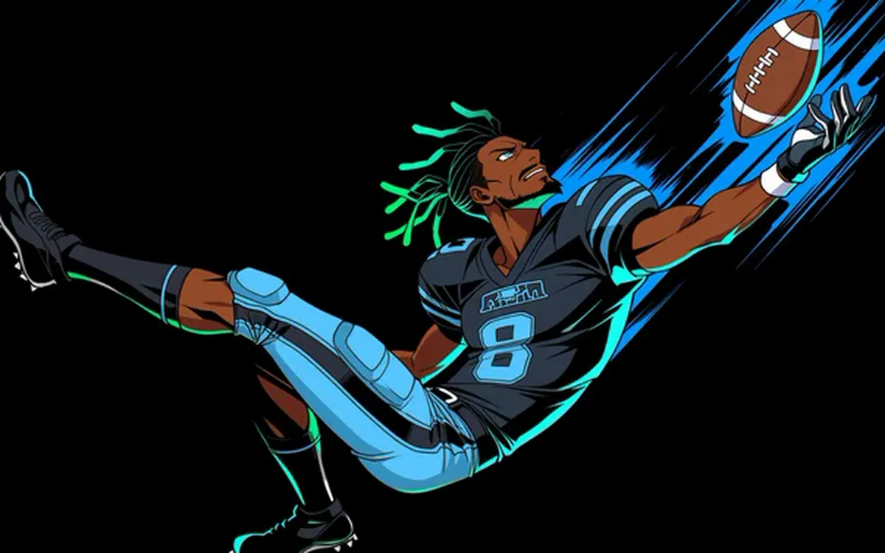

welcome to my lab. let's cook.
ff-jarvis
A fantasy football model and its nightly data pipeline. It prices every pick on a draft board in August, then feeds Team Watch all season.
+24 to +55points a season over drafting by ADP, in simulated drafts 2011 to 2025; ahead in 12 of 15 seasons
Python and pandas for the model and pipeline. React, Vite and Tailwind for the draft board, on Vercel.
- A change to the model only ships if it beats plain ADP out of sample: at least 40 samples, a bootstrap interval that excludes zero, and |t| of 2.4 or more. Anything that fails drops to zero weight.
- Simulated 12-team drafts, 2011 to 2025: playoff odds 59.8% to 63.2% and title odds 14.2% to 15.2% against drafting by ADP (2026-09-08 run).
- In season it projects every player each week from ESPN, Yahoo, Sleeper, nflverse, props and weather data.
- Each refresh step runs on its own, so one API failure is logged and skipped. 1,272 tests.
Team Watch
Your league's weekly paper, running on ff-jarvis: start/sit calls, a profile for every player, and your roster as a pack of cards to rip open each week.
A Python build step makes one inlined HTML page from ff-jarvis's data, rebuilt three times a day, on Vercel.
- Start/sit calls are graded every week, in public, against FantasyPros and Pitcher List.
- The stat sphere is the player's season ranks drawn as a crystal; a tap unfolds it into a flat radar.
- Tests are mapped to the views they touch. A CSS change runs about 14 seconds of tests instead of the full 65.
Restock Watch
Watches big-box retailers for sealed Pokémon, One Piece and Riftbound product, and pings the moment it is back. Next: checking out before the bots do.
Python with threaded pollers, browser automation, Discord alerts, and a Vercel status page.
- 121 retailer listings across 7 retailers, priced against 91 TCGplayer products (as of 2026-10-03).
- Two polling lanes: slow browser-driven retailers no longer hold up fast plain-HTTP ones. GameStop's effective poll fell from about 700 seconds to about 180.
- The browser and its daemon are recycled when memory passes set limits, after leaks that grew to several gigabytes.
seat-scout
Found the best seats still open for IMAX 70mm showings at 7 California theaters.
Node.js scanner on a schedule, a static Vercel page, and a Discord bot for on-demand checks.
- Its September run scanned 547 showtimes; 257 still had good centre pairs. 11 run-extended alerts fired between July 20 and August 3.
- The public page shows counts of good adjacent seats only, never the seat grids.
- Near-term showings are re-fetched every scan. Later dates are cached for 24 to 72 hours.
Team Lock
A fantasy football auto-battler. Build a roster, call plays against reads you can't see, and watch it play out.

A Python paper-game simulator, a PixiJS v8 animation engine, and a ComfyUI art pipeline.
- Every rule is a flagged switch and a seeded play replays identically, so a balance change can be tested, not argued.
- Character animation runs on damped springs and a keyframe timeline.